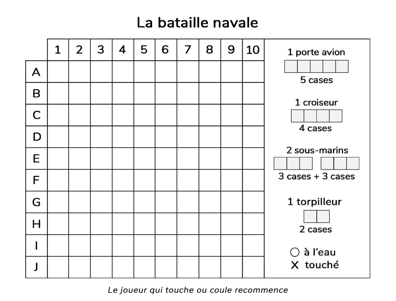
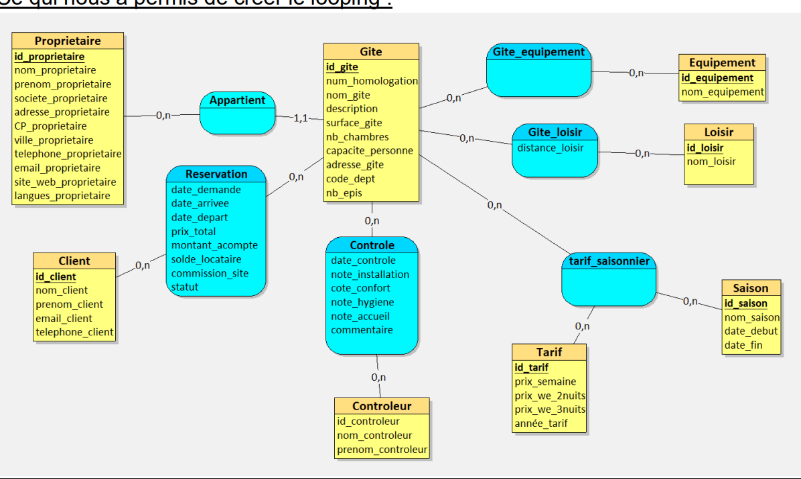
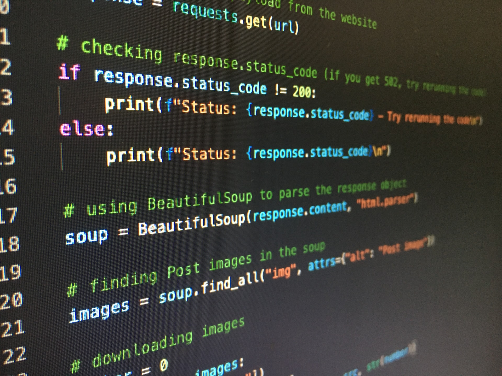
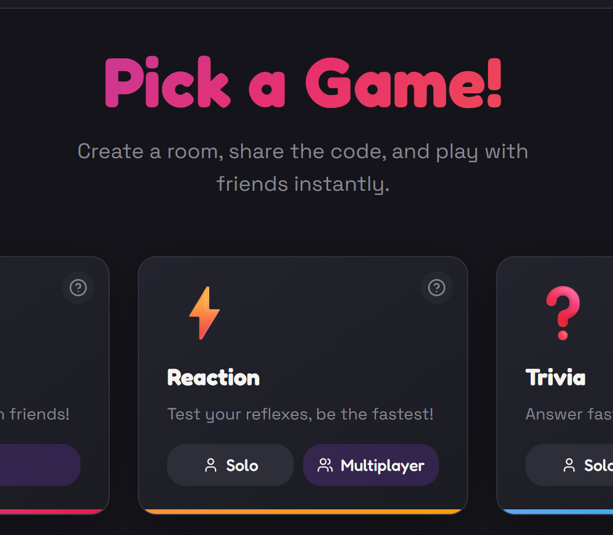
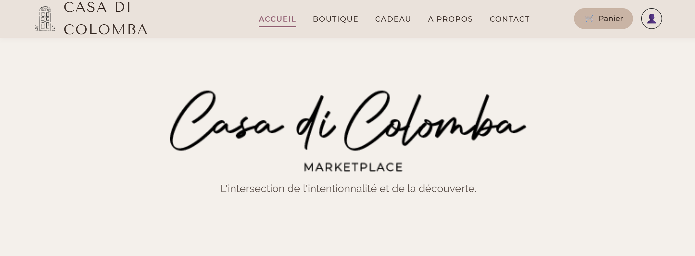

Bataille Navale
Jeu de la Bataille navale fonctionnel sans interface graphique.
Étudiant en 2ème année de BTS SIO
Passionné par l'informatique et les nouvelles technologies, je prépare actuellement mon BTS Services Informatiques aux Organisations. Curieux et motivé, je m'intéresse particulièrement au développement. Bienvenue sur mon portfolio où je présente mon parcours, mes projets et mes expériences.
BTS SIO option SLAM
EPSI
BTS SIO option SLAM
EPSI
Bac mention Assez Bien - Spécialité Math & NSI
Lycée Jean Jaurès
L'option Solutions logicielles et applications métiers forme des spécialistes des logiciels (rédaction d'un cahier des charges, formulation des besoins et spécifications, développement, intégration au sein de la société).
Les techniciens supérieurs en informatique option SLAM sont préparés aux métiers de :
Le Brevet de Technicien Supérieur aux Services Informatiques aux Organisations (BTS SIO) s'adresse à ceux qui souhaitent se former en deux ans aux métiers d'administrateur réseau ou de développeur, et ainsi intégrer directement le marché du travail ou continuer des études dans l'informatique.
L'option Solutions d'infrastructure, systèmes et réseaux prépare des spécialistes en réseaux et équipements informatiques (installation, maintenance, sécurité).
Les titulaires du BTS SIO option SISR peuvent exercer les métiers suivants :
Création d'architectures, développement backend/frontend et gestion de bases de données relationnelles.

Jeu de la Bataille navale fonctionnel sans interface graphique.

Développement d'une application de chat en ligne.

Création d'un site web pour faire des réservations en ligne.

Base de donnée pour Gîtes.

Développement d'une application de gestion en Python.

Création d'une application de jeux en ligne avec l'IA.
Projets de 2ème année à venir.

Développement d'un site web d'e-commerce de zéro.
Le contenu lié aux Situations sera disponible prochainement.
La veille technologique est un processus de surveillance des évolutions et des innovations dans un domaine précis. Elle permet de recueillir, analyser et exploiter des informations sur les nouvelles technologies afin d’anticiper les changements, innover, rester compétitif et saisir des opportunités.

Le lancement du Samsung Galaxy S26, objet principal de cette veille, ne représente pas une simple mise à jour annuelle.
Un projet, une question ou une offre de stage ? N'hésitez pas !